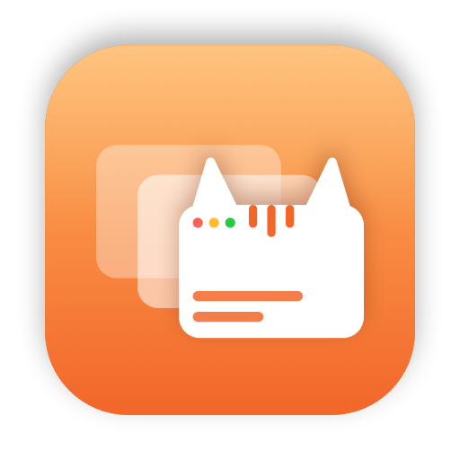

A minimal app switcher for macOS. Hold ⌥, tap Tab, see every app as a live preview, let go to switch.
Try it: hold ⌥ / Alt and tap Tab here, or click the demo.
No settings window, no dock icon, no account. Tabby sits in your menu bar and stays out of the way until you reach for it.
See each app's front window, not just its icon, so you land on the right thing first time.
A quick ⌥Tab tap jumps to your last app without even showing the panel.
Apps are ordered by when you last used them, exactly like ⌘Tab.
Shows on your current desktop and over full-screen apps.
Signed updates arrive in the background, and you keep your permissions.
Previews are captured in memory and never leave your Mac. No analytics, no network except update checks.
Everything happens while you hold ⌥.
| ⌥ Tab | Open the switcher, move to the next app |
| ⌥ ⇧ Tab | Move to the previous app |
| ← → | Move the selection |
| release ⌥ | Switch to the selected app |
| ↩ / click | Switch now |
| esc | Cancel |
| hover / click | Select a preview / switch to it. Used the mouse? Letting go of ⌥ keeps the switcher open for your click |
| hover ✕ / ⏻ | Quit or force quit that app, without leaving the switcher |
Two minutes, once.
brew tap aimen08/tabby https://github.com/aimen08/tabby
brew install --cask aimen08/tabby/tabbyUsing AltTab or another switcher on ⌥Tab? Quit it first.